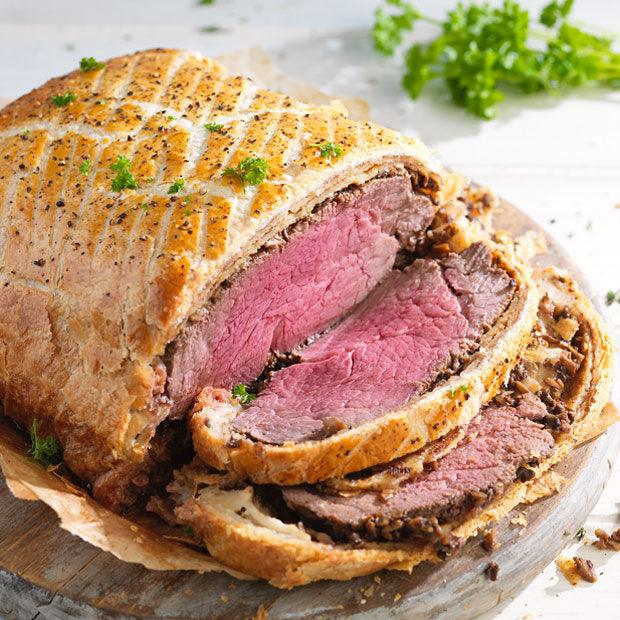

Beefwellington
Home

How to make a Beef wellington?
A few months ago my father got an inkling to make beef Wellington, beef tenderloin smothered with mushroom duxelles, wrapped in puff pastry, and baked. Who knows where he got the idea, maybe just curiosity.
Beef Wellington is one of those dishes that was a lot more popular 40 years ago than it is now. But once my dad decides he wants to make something, come hell or high water, it will be made
It also helps that Chef Gordon Ramsay has a video online on how to make his version of beef Wellington, using Parma ham wrapped around the tenderloin instead of the more traditional pâté de foie gras.
Ingredients:
- 1 pound thick beef tenderloin
- Kosher salt and freshly ground black pepper
- 2 tablespoons extra virgin olive oil
- 2 tablespoons yellow mustard (like Coleman's Original English Mustard)
- 1 pound mushrooms (see recipe note)
- 4 thin slices ham (Parma ham if you can get it) or prosciutto
- 1 (7 to 8 1/2-ounce sheet) puff pastry, thawed (see recipe note)
- 2 large egg yolks, beaten
- Flaky salt, for sprinkling on top
Description
- Preheat oven:
Allow the oven to preheat to 400°F as you assemble the Wellington.
- Sear the beef:
Season the beef generously with salt and pepper. Heat 2 tablespoons of oil in a large pan on high heat. Sear the beef in the pan on all sides until well browned, about 2 to 3 minutes per side. (Hint: do not move the beef until it has had a chance to brown.)
- Brush the beef with mustard:
Remove the beef from the pan and let cool. Once cooled, brush the beef on all sides with mustard.
- Prepare the mushrooms:
Chop the mushrooms and put them into a food processor. Pulse until very finely chopped.Heat the sauté pan on medium-high heat. Transfer the mushroom mixture into the pan and cook, allowing the mushrooms to release their moisture, 10 to 15 minutes. When the moisture released by the mushrooms has all boiled away, remove the mushrooms from the pan and set aside to cool.
- Wrap the beef in mushroom paste and ham:
Roll out a large piece of plastic wrap. Lay out the slices of ham on the plastic wrap so that they overlap and are large enough to wrap around and encapsulate the beef. Spread the mushroom mixture over the ham.
Place the beef in the middle and roll the mushroom and ham over the beef, using the plastic wrap so that you do this tightly. Wrap up the beef into a tight barrel shape, twisting the ends of the plastic wrap to secure. Refrigerate for 20 minutes.
- Roll out the puff pastry and wrap the beef:
On a lightly floured surface, roll out the puff pastry sheet to a size that will wrap around the beef. Unwrap the beef from the plastic wrap and place in the middle of the pastry dough. Brush the edges of the pastry with the beaten egg yolks.
- Brush with the egg wash and score:
Place the pastry-wrapped beef on a baking pan. Brush the exposed surface again with beaten eggs.
- Bake in the oven:
Bake at 400°F for 25 to 35 minutes. The pastry should be nicely golden when done. To ensure that your roast is medium rare, test with an instant read meat thermometer. Pull out at 125 to 130°F for medium rare.